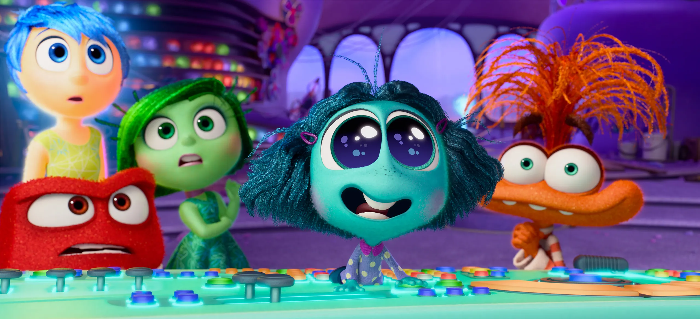

About Anxiety
She is a bundle of nerves, always anxious about making a good impression, especially with the pre-existing emotions like Joy.
Anxiety and other emotions.
Anxiety iseloomuomadused
- Tal on palju energiat.
- Ta on silmapaistev.
- Ta ei taha midagi halba.
Anxiety sõbrad
Temaga koos elab mitmeid erinevaid tundeid. Vajuta allolevatele linkidele, et nende kohta rohkem õppida.